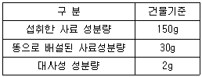

축산기사 (2009-08-30 기출문제)
1과목: 가축육종학
1. 다형질선발의 장점이 아닌 것은?
- 단일 형질선발시 보다 단일 형질의 개량속도가 빨라진다.
- 선발의 정확도가 증가한다.
- 실질적으로 총체적 경제 가치를 높일 수 있다.
- 많은 양의 정보를 이용할 수 있다.
(정답률: 68%)

2. 돼지의 계통 조성 목적이 아닌 것은?
- 제일성(유전적 균일 정도)을 높일 수 있다.
- 우수 유전자를 영속적으로 유지 활용할 수 있다
- 돼지 생산 비용을 줄일 수 있다.
- 효과적인 잡종 강세 효과를 얻을 수 있다.
(정답률: 54%)
3. 육용계의 복강 지방을 측정하는 방법이 아닌 것은?
- 캘리퍼(Callpers)를 높일 수 있다.
- 초음파 단층 촬영(C.A.T. scanning)방법
- 반사분광광도계(Reflective spectrophotmeter)를 이용하는 방법.
- 혈장 중의 초저밀도 지질 단백질을 측정하여 체지방축적의 지표로 이용하는 방법.
(정답률: 45%)
4. 가축형질에서 관찰될 수 있는 변이 가운데 성격이 다른 것은?
- 모색
- 산자수
- 체장
- 체중
(정답률: 62%)
5. 집단의 개체간에 존재하는 변이의 크기를 계산하는데 적합하지 않는 것은?
- 표준편차
- 범위
- 분산
- 개체간의 동일한 측정치
(정답률: 72%)
6. 돼지에서는 잡종강세 현상을 이용하기 위하여 품종간 교배를 많이 하고 있는데, 이때 수퇘지로 사용되는 품종의 특징이 아닌 것은?
- 일당 증체량
- 비유량
- 사료요구율
- 근내 지방도
(정답률: 85%)
7. 왜소성 유전자(dwarf gene)는 다음 중 어느 축종의 육종에서 산업적으로 널리 이용되고 있는가?
- 돼지
- 가토(家兎)
- 산양
- 육용계
(정답률: 43%)
8. 어느 모집단의 열성유전자의 빈도가 0.1일 때 모든 열성 동형접합의 개체를 4세대 동안 도태시켰을 때 열성유전자의 빈도는?
- 0.071
- 0.125
- 0.2
- 0.25
(정답률: 47%)
9. 개량되지 않은 재래종의 능력을 높이기 위하여 계속해서 개량종과 교배하여 개량종의 혈액비율을 높이는 교배법은?
- 근친교배
- 무작위 교배
- 누진교배
- 톱크로스
(정답률: 87%)
10. 어떤 형질에 대한 모집단의 평균능력과 그 집단에서 종축으로 사용하기 위하여 선발된 개체들의 평균능력간의 차이를 가리키는 용어는?
- 예상차
- 선발차
- 선발지수
- 종웅지수
(정답률: 83%)
11. 최적선형불편예측법(BLUP)의 개체 모형에 해당되지않는 것은?
- 고정효과모형
- 양의효과모형
- 혼합효과모형
- 표준효과모형
(정답률: 40%)
12. 유우 Holstein종의 모색에 있어서 백반의 크기를 지배하는 유전자는?
- 중복유전자
- 변경유전자
- 보족유전자
- 상위유전자
(정답률: 42%)
13. 돼지에서 도체 품질의 개량을 위하여 가장 많이 이용되는 검정 방법은?
- 혈통검정
- 능력검정
- 후대검정
- 형매검정
(정답률: 35%)
14. Yokshire종과 Poland China종 간 일대잡종 돼지의 모색은?
- 흑색
- 적색
- 갈색
- 백색
(정답률: 75%)
15. 생식세포분열 중 전기(I)에서 하나의 염색체가 4개의 염색분체(tetrad)로 되는 시기는?(오류 신고가 접수된 문제입니다. 반드시 정답과 해설을 확인하시기 바랍니다.)
- 세사기(leptotene)
- 접합기(zygotene)
- 태사기(pachytene)
- 이중기(diplotene)
(정답률: 55%)
16. 변이(variation)에 대한 설명으로 부적합한 것은?
- 개체간의 차이를 변이라고 한다.
- 변이의 크기는 선발과 관계가 있다.
- 전체 변이중에서 유전변이가 차지하는 비율을 유전력이라 한다.
- 환경적변이도 가축개량에 이용된다.
(정답률: 69%)
17. 한우의 능력 검정에 사용되는 용어 중 잘못 설명된 것은?
- 당대검정 : 후보 종모우를 선발하기 위해 자손의 능력을 검정하는 것
- 후보종모우 : 당대 검정을 통해 선발된 능력이 우수한 수소
- 보증종모우 :후대 검정을 통해 선발된 능력이 공인된 수소
- 검정대상우 :후대 검정을 위해 생산된수송아지
(정답률: 64%)
18. Hardy - Weinberg 평형을 유지하기 위하여 존재하지 않아야 하는 요인이 아닌 것은?
- 선발과 돌연변이
- 무작위교배
- 이주와 격리
- 유전적 부동
(정답률: 59%)
19. AA일때 50kg, aa는 30kg 이었다. 이 유전자가 상가적(相加的)으로 작용할 때 유전자형 Aa의 예상 성적은?
- 80kg
- 50kg
- 40kg
- 30kg
(정답률: 83%)
20. 젖소의 생애 중 우유생산이 최고조에 달하는 시기는 언제인가?
- 2~3세
- 4~5세
- 6~7세
- 9~10세
(정답률: 43%)
2과목: 가축번식생리학
21. 정자의 첨체 반응에 관한 설명 중 틀린 것은?
- 저자가 난자의 투명대를 통과하는 과정에 일어나는 현상이다.
- 정자가 난구세포로부터 활력을 받게 된다.
- 아크로신(acrosin)이 투명대를 통과하도록 돕는다.
- 히아루로니데이스(hyaluronidase)라는 효소가 정자를 투명대 표면에 도달하는 것을 돕는다.
(정답률: 67%)
22. 돼지에서 3~8주령인 자돈을 이유시킬 경우 이유 후 얼마 정도에 발정이 오는가?
- 3~15일
- 20~30일
- 30~40일
- 40~50일
(정답률: 49%)
23. 25칸으로 된 혈구계산판에서 200배로 희석한 정액의 경우 5칸의 혈구계산판 정자수의 총계가 100개라고 하면 정액 1ml 중의 정자수는?
- 5억
- 10억
- 12억
- 14억
(정답률: 70%)
24. 성숙한 암컷 포유가축에서 배란 직전의 성숙난포가 배란에 이르기까지 일어나는 3가지의 중요한 과정에 해당되지 않는 것은?
- 난모세포의 세포질과 핵의 성숙
- 제 2극체의 방출
- 과립막세포 사이에 존재하는 세포결합의 손실
- 세포외벽의 박층(薄層)화와 파열
(정답률: 65%)
25. 난산은 크게 모체측 원인, 기계적 원인, 태아측 원인으로 구분된다. 다음 중 기계적 원인에 의한 난산은?
- 1차 자궁무력
- 태위, 태향, 태세 이상
- 태아골반의 불균형
- 발육부전
(정답률: 39%)
26. 황체의 퇴화를 일으키는 물질은?
- PMSG
- PGF２α
- HCG
- LH
(정답률: 75%)
27. 프로스타글란딘(Prdstaglandin : PG)의 생리작용에 대한 설명 중 틀린 것은?
- 교배시 수컷 및 암컷의 생식도관을 수축시켜 정자의 수종을 촉진
- 성주기를 반복하는 동물에서 자궁은 PGF２α를 분비하여 황체의 수명을 조절
- 수정된 난자가 자궁내 착상하여 임신을 유지하는 역할
- 분만기에 분비된 PGF２α는 황체를 퇴행시키고 자궁근을 수축하여 분만촉진제 역할 수행
(정답률: 62%)
28. 1년 중 단 한번의 발정기 밖에 없는 단발정 동물에 해당하는 것은?
- 소
- 돼지
- 여우
- 면양
(정답률: 54%)
29. 소의 정자가 암컷의 생식기 내에서 생존하는 평균 시간은?
- 10시간 이내
- 10~20시간
- 30~40시간
- 40~50시간
(정답률: 54%)
30. 암소의 자궁 내에 분포되어 있는 자궁소구의 수는?
- 40~60
- 70~120
- 125~160
- 165~200
(정답률: 49%)
31. 수정란 이식의 장점이 아닌 것은?
- 우수한 빈축의 자축을 많이 생산할 수 있다.
- 가축 대신 수정란의 수송으로 경비를 절감시킬 수 있다.
- 후대검정을 하는데 편리하게 사용할 수 있다.
- 세대 간격을 넓힐 수 있다.
(정답률: 75%)
32. 수정란 동결 보존시 동해방지제로 적합하지 않은 것은?
- 디.엠.에스.오(DMSO : Dinethyl Sulphoxide)
- 글리세롤(Glycerol)
- 에틸렌글리콜(Ethylene Glycol)
- 시트르산(Citric acid)
(정답률: 60%)
33. 난포자극호르몬(FSH)의 대용으로 자주 쓰이는 호르몬은?
- 황체형성호르몬(LH)
- 임부융모성 성선자극호르몬(HCG)
- 최유호르몬(LTH)
- 임마혈청성 성선자극호르몬(PMSG)
(정답률: 61%)
34. 모축인 돼지의 성성숙이 완료되는 시기는?
- 생후 10주
- 생후 20주
- 생후 30주
- 생후 40주
(정답률: 47%)
35. 수정란에서 태반과 태막이 되는 것은?
- 난구세포
- 투명대
- 내부세포과
- 영양배엽
(정답률: 51%)
36. 유즙의 분비순서가 알맞게 나열된 것은?
- 유선엽 → 유선포 → 유선조 → 유두
- 유선엽 → 유선조 → 유선포 → 유두
- 유선포 → 유선엽 → 유선조 → 유두
- 유선조 → 유선포 → 유선엽 → 유두
(정답률: 55%)
37. 성숙한 암컷 가축의 난관 분비액에 관한 설명중 옳지 않은 것은?
- 스테로이드 호르몬에 의해 양이 조절된다.
- 수정란의 발달에 알맞은 환경을 제공한다.
- 주입된 정자의 수정능 획득을 유도한다.
- 황체기에 분비량이 최고 수준에 달한다.
(정답률: 55%)
38. 가축의 교배적기를 결정하는 생리적 요인으로 부적합한 것은?
- 혈장내 cortisol 호르몬의 함량
- 배란시기와 정자가 수정 능력을 획득하는데 요하는 시간
- 자축의 생식기도내에서 정자가 수정 능력을 유지하는 기간
- 배란된 난자가 자축의 생식기도내에서 수정 능력을 유지하는 기간
(정답률: 76%)
39. 젖소의 수정란 이식을 위해 공란우의 자궁에서 수정란을 채취하는 적기는?
- 교배 후 1~2일
- 교배 후 3~4일
- 교배 후 6~7일
- 교배 후 12~13일
(정답률: 58%)
40. 일반적으로 홀수타인 젖소의 평균 임신기간은?
- 279일
- 259일
- 269일
- 330일
(정답률: 63%)
3과목: 가축사양학
41. 베타산화(β-oxidation)에 의하여 분해가 이루어지는 영양소는 무엇인가?
- 지방
- 탄수화물
- 무기질
- 단백질
(정답률: 71%)
42. 도살 전 스트레스를 받아 도축 후 해당작용의 부조화에 의해 나타나는 검붉은 색깔의 식육으로 pH가 높아 미생물이 신속히 발육하여 저장성이 떨어지는 고기를 무엇이라 하는가?
- 신선육
- PSE육
- DFD육
- 가공육
(정답률: 71%)
43. 다음 중 곰팡이와 관계가 없는 것은?
- tannin
- mycotoxin
- ergotoxin
- aflatoxin
(정답률: 67%)
44. 돼지는 뼈, 근육, 지방의 발육과정이 품종간에 차이가 있으며 이를 베이컨형과 라드 형으로 구분한다. 아래의 연결 중 잘못된 것은?
- 라드형 : 듀록종
- 베이컨형 : 대요크셔종
- 라드형 : 랜드레이스종
- 라드형 : 버크셔종
(정답률: 68%)
45. 다음 사료 중 청산 배당체를 함유하고 있는 사료는?
- 아마씨깻묵
- 목화씨깻묵
- 들깻묵
- 콩깻묵
(정답률: 70%)
46. 다음은 이유전의 송아지를 어미와는 별도로 떼어서 따로 먹이는 새끼 따로 먹이기(creep feeding)를 할 때 기대할 수 있는 효과와 직접 관계가 없는 것은?
- 이유시 송아지 체중이 크다.
- 이유시 송아지의 육질을 개선한다.
- 어미소의 체중감소가 적어진다.
- 어미소의 번식횟수를 증가시킬 수 있다.
(정답률: 64%)
47. 수용성 비타민 중 쌀겨와 밀기울 같은 곡류부산물에 많이 있으며 결핍시 다발성 신경염인 각약증과 맥박수 감소 등이 발생하는 물질은?
- 티아민
- 리보플라빈
- 니코틴산
- 판토텐산
(정답률: 57%)
48. NRC 사양표준이 규정한 산란계의 단백질 요구량은?
- 9%
- 11%
- 13%
- 15%
(정답률: 41%)
49. 젖소를 분만한 어미소로부터 생산되는 초유의 생산 시기로 가장 적당한 것은?
- 1~3일간
- 3~5일간
- 5~7일간
- 7~9일간
(정답률: 78%)
50. 정상적인 젖소의 젖꼭지는 몇 개인가?
- 1개
- 2개
- 3개
- 4개
(정답률: 84%)
51. 다음 조건에서 건물의 순소화율(또는 진정소화율, true digestibility) 값은?

- 78.7%
- 80.0%
- 81.3%
- 82.0%
(정답률: 41%)
52. 동물체의 각 부위는 성장속도나 성장률이 다르기 때문에 성장이 진행됨에 따라 체조성이 달라지게 된다. 다음 중 성장순서가 바르게 연결된 것은?
- 골격 → 지방 → 근육
- 골격 → 근육 → 지방
- 근육 → 골격 → 지방
- 지방 → 골격 → 근육
(정답률: 72%)
53. 아미노산으로 분해된 단백질이 소장에서 흡수되어 사용되지 않는 것은?
- 체조직, 우유, 계란 등의 합성을 한다.
- 호르몬, 효소 등을 합성한다.
- 필수 아미노산 합성에도 쓰인다.
- 노쇠된 조직의 대체(손톱, 발톱) 등에 쓰인다.
(정답률: 47%)
54. Salmonella gallinarum 균에 의해서 발병되며, 여름철에 발병빈도가 높은 닭의 질병은?
- 가금 콜레라
- 가금 티푸스
- 마이코플라스마병
- 전염성 코라이자
(정답률: 50%)
55. 자돈의 영양성 빈혈 예방을 위하여 철분 공급제를 인위적으로 투여하고자 할 때 그 적당한 양은?
- 40㎎
- 60㎎
- 80㎎
- 120㎎
(정답률: 34%)
56. 가금류의 에너지 요구량을 표현하는데 있어 가장 널리 쓰이고 있는 방법은?
- TDN
- DE
- ME
- NE
(정답률: 66%)
57. 지방산이 β-산화작용을 받게 되면 TCA회로 중의 Acetyl - CoA를 생성한다. 이때 Acetyl - CoA 1 분자가 TCA회로 중에서 완전 산화될 때 생성되는 ATP 수는?
- 35 ATP
- 30 ATP
- 15 ATP
- 12 ATP
(정답률: 42%)
58. 단백질 분해 효소가 아닌 것은?
- Renin
- Pepsin
- Trypsin
- Amylase
(정답률: 80%)
59. 비타민 중 판토텐산은 옥수수와 대두박에는 부족하고 알팔파 분말, 어간, 밀기울 등에는 풍부하다. 판토텐산이 부족할 경우 돼지에게 나타나는 증상이 아닌 것은?
- 번식돈의 설사
- 식욕 및 음수량 감소
- 보행불안
- 빈혈증
(정답률: 63%)
60. 다량의 농후사료와 소량의 조사료를 급여할 경우에는 유지방의 함량이 저하하는데, 유지방의 감소를 방지하기 위해서는 적어도 최소 몇 %의 조섬유가 사료 중에 함유되어야 하는가?
- 10%
- 13%
- 15%
- 17%
(정답률: 35%)
4과목: 사료작물학 및 초지학
61. 성형건초의 종류 중에서 수확한 목초를 건조하여 분쇄후 압축 성형한 것은?
- 펠렛(pellet)
- 콥(cob)
- 큐브(cube)
- 비스킷(biscuit)
(정답률: 55%)
62. 출수된 다음의 초기생육이 매우 빠르고 남부지방의 답리작으로 적합한 화본과 목초는?
- Orchardgrass
- Italian rygrass
- Timothy
- Tall fescue
(정답률: 62%)
63. 수단그라스의 생육에 관한 기후 및 토양조건으로 틀린 것은?
- 평균기온이 25~32℃인 곳에서 왕성하게 생육한다.
- 추위에 강하고 가뭄과 고온에도 강하다.
- 중점토에서 사토에 이르기까지 재배할 수 있다
- 알맞은 토양산도는 pH 5~8이다.
(정답률: 66%)
64. 각 사료작물의 사일리지로 이용할 때 수확 적기를 나타낸 것 중 틀린 것은?
- 옥수수 : 황숙기 또는 건물함량 30% 내외
- 호밀 : 호숙기 ~ 완숙기
- 사초용 수수 : 호숙 중기 ~ 호숙 말기
- 혼파목초 : 출수초기 또는 개화초기
(정답률: 49%)
65. 북방형 목초의 특징으로 알맞은 것은?
- 버뮤다그라스와 클라인그라스가 있다.
- 여름철에 생육이 왕성하다.
- 난지형 목초라고도 부른다.
- 여름철에 하고현상을 나타낸다.
(정답률: 56%)
66. 다음 사료작물들의 혼파조합 중 방목초지에 가장 적합한 것은?
- 라디노클로버 - 알팔파 - 귀리
- 페레니얼라이그라스 - 라디노클로버 - 티머시
- 진주조 - 톨페스큐 - 라디노클로버
- 라디노클로버 - 칡 - 자운영
(정답률: 63%)
67. 다음 사료작물 중 토양의 적응 범위가 가장 넓은 종류는?
- 수수
- 옥수수
- 완두
- 호밀
(정답률: 40%)
68. 건초의 품질을 평가하는 방법으로 Rohwede 등(1978)의 상대적 사료가치(relative feed value)가 많이 이용되고 있다. 알팔파 건초의 상대적 사료가치가 101 ~ 123일 경우 어느 등급에 속하는가?
- 1등급
- 2등급
- 3등급
- 4등급
(정답률: 42%)
69. 북방형 목초의 최종 예취적기는 월동과 이듬해 재생에 영향을 미치기 때문에 중요하다. 그러면 가장 적합한 최종 예취 시기는?
- 일 평균기온이 5℃되는 날로부터 40일전
- 일 평균기온이 5℃되는 날로부터 60일전
- 일 평균기온이 10℃되는 날로부터 40일전
- 일 평균기온이 10℃되는 날로부터 60일전
(정답률: 41%)
70. 사료 작물로서 옥수수의 일반적인 특성이 아닌것은?
- 옥수수는 C4형 식물이다.
- 일반적으로 높은 기온과 많은 양의 일조가 필요한 작물이 아니다.
- 일평균 기온 21~27℃(야간 13℃ 이상)가 최소한 140일 정도 계속되어야 최고 수확을 올릴 수 있다.
- 생육적지는 비옥, 토심이 깊고 유기질이 풍부한 사질양토이다.
(정답률: 61%)
71. 목초의 보통명과 학명이 올바르게 짝지어진 것은?
- 톨 페스큐(Tall fescue):Dactylis glomerata L.
- 오처드그래스(Ochardgrass):Featucaarundinaceae L.
- 알팔파(Alfalfa):Phleum pratense L.
- 화이트 클로버(White clover):Trifolium repens L.
(정답률: 69%)
72. TDN 생산이나 긴 겨울철을 생각할 때 우리나라 중북부 지방의 낙농농가에 맞는 작부조합은? (단, 아래 작물들은 모두 만생종이다.)
- 옥수수 + 호밀
- 옥수수 + 이탈리안 라이그라스
- 수수 + 이탈리안 라이그라스
- 수수 + 호밀
(정답률: 58%)
73. 우리나라에서 재배하는 하계작물로 수량이 가장 높은 작물들은?
- 옥수수와 호밀
- 옥수수와 이탈리안 라이그라스
- 수수류와 이탈리안 라이그라스
- 옥수와 수수류
(정답률: 45%)
74. 건초조제 과정을 순서대로 바르게 연결한 것은?
- 기상예측 → 수확 → 결속(곤포) → 뒤집기(반전) → 집초 → 저장
- 기상예측 → 집초 → 뒤집기(반전) → 수확 → 결속(곤포) → 저장
- 기상예측 → 수확 → 뒤집기(반전) → 집초 → 결속(곤포) → 저장
- 기상예측 → 뒤집기(반전) → 결속(곤포) → 수확 → 집초 → 저장
(정답률: 72%)
75. 다음 중 알팔파의 주요 특성이 아닌 것은?
- 가소화 영양분 함량이 높다.
- 여름철 하고나 가뭄에 약하다.
- 양질의 건초조제가 가능하다.
- 근류균에 의해 질소고정을 한다.
(정답률: 50%)
76. 다음 중 최지 조성에 경운 및 쇄토를 하기 위하여 사용하는 기계가 아닌 것은?
- 하베스타
- 플라우
- 로터리
- 디스크 해로우
(정답률: 48%)
77. 윤환방목을 위한 이동식 목책으로 가장 적합한 것은?
- 나무목책
- 전기목책
- 콘크리트목책
- 철주목책
(정답률: 57%)
78. 콩과 목초를 화본과 목초와 혼파했을 때 초지에서 비료의 절약효과가 가장 큰 것은>?
- P
- K
- N
- Mg
(정답률: 63%)
79. 드릴(drill) 파종기의 특징으로 부적합한 것은?
- 조파(줄뿌림)에 쓰인다.
- 파종 후 진압이 가능하다.
- 급경사지에서도 작업능률이 좋다.
- 종자를 고르게 뿌릴 수 있다.
(정답률: 38%)
80. 사일리지 발효의 첫 번째 단계인 호흡작용에 의한 손실을 최소화하기 위한 조치가 아닌 것은?
- 가능하면 세절하고 오랜 기간에 걸쳐 밀봉한다
- 벽면주변 등 답압이 잘 안되는 곳 등을 집중적으로 답압한다.
- 윗부분은 수분이 약간 많거나 길이가 긴 재료로 충진하고 답압한다.
- 외부에서 공기나 물이 들어가지 않도록 꼼꼼히 밀봉한다.
(정답률: 62%)
5과목: 축산경영학 및 축산물가공학
81. 축산경영자의 주요 기능에 속하지 않는 것은?
- 목표설정
- 경영분석
- 계획수립
- 잠재의식
(정답률: 79%)
82. 축산경영조직에 있어서 개별조직의 단점을 보완 하고 경영의 효율을 증진시키기 위하여 공동조직을 하는 경우 공동조직의 기본원칙으로 볼 수 없는 것은?
- 생산성이나 소득면에서의 유리성
- 경영성과의 배분에 있어서의 공평성
- 참여농가의 의사반영에 있어서의 민주성
- 참여농가의 생산물 판매에 있어서의 경쟁성
(정답률: 70%)
83. 우리나라 축산경영의 특징에 해당되는 것으로 가장 적당한 것은?
- 가족농보다 높다.
- 수출의존도가 높다.
- 젖소 사육두수가 가장 많다.
- 구입사료 의존형 가공형 축산이다.
(정답률: 67%)
84. 한우 비육경영에 가장 큰 비용 항목은?
- 사료비
- 노동비
- 가축비
- 감가상각비
(정답률: 48%)
85. 농업경영의 목적에 관한 설명으로 볼 수 없는 것은?
- 농업은 실업으로서 식물 및 동물이나 때로는 다시 이들을 가공하여 실익을 올리고 화폐를 얻는 것을 말한다.
- 자본주의 하에서의 지속적 수익을 추구한다.
- 농업경영의 목적은 모든 나라와 시대에 동일하게 나타난다.
- 여러 가지 경영부문을 알맞게 결합함으로써 연간의 영농으로부터 최고의 순수익을 얻는 것을 말한다.
(정답률: 70%)
86. 축산경영분석에 있어 성과지표에 해당되는 것은?
- 경영규모
- 생산비율
- 축산소득
- 토지이용율
(정답률: 56%)
87. 양돈과 관련된 경영은 크게 비육돈경영과 번식돈 경영으로 구분할 수 있는데, 그 중 양돈비육경영의 수익성향상 방안 해당되는 것은?
- 산자수를 많게 하는 것
- 자돈가격을 높일 것
- 연간비육회전을 높일 것
- 연간분만횟수를 증가시킬 것
(정답률: 55%)
88. 계란의 생산비 절감방안으로 부적당한 것은?
- 경영규모를 확대한다.
- 노동생산성을 낮춘다.
- 산란계의 육성율을 높인다.
- 연간분만횟수를 증가시킬 것
(정답률: 52%)
89. 농후사료 kg당 가격이 250원에 300원으로 상승함에 따라 착유우 두당 7,000kg의 우유를 생산하는 농가가 농후사료를 3,500kg 급여하다가 500kg을 감소시키고 동일한 우유를 생산하기 위해 건초로 대체하기로 하였다. 이때 건초는 기존에 급여하는 것보다 750kg이 더 소요되었을 때 건초 kg당 가격이 얼마일 때 사료비가 최소화 되는가?
- 200원
- 210원
- 220원
- 230원
(정답률: 62%)
90. 다음 중 토지의 경제적 특성이 아닌 것은?
- 불배양성
- 불가증성
- 불가동성
- 불소모성
(정답률: 64%)
91. 축산농가의 농가소득 계산방법이 아닌 것은?
- 농업소득 + 농외수익 - 농외지출
- 농업소득 + 농외소득
- 농업조수익 - 농업경영비 + 농외소득
- 농업소득 + 농가소득
(정답률: 42%)
92. 한우번식농가에 대한 설명으로 가장 부적당한 것은?
- 주산물 수입은 송아지 판매이다.
- 소수입 증대를 위해서는 번식률을 향상시켜야 한다.
- 소득증대를 위해서는 경영비 절감을 해야 한다
- 소득증대와 조수익은 아무런 관련이 없다.
(정답률: 75%)
93. 총생산량이 10, 투입량이 2일 때 평균생산물(AP)은?
- 20
- 15
- 10
- 5
(정답률: 58%)
94. 우유의 생산비 절감방안으로 적합하지 않은 것은?
- 사료비 절감
- 번식간격의 확대
- 두당산유량 증대
- 젖소의 생산수명 연장
(정답률: 69%)
95. 낙농경영에 있어서 조수익으로 볼 수 없는 항목은?
- 우유 판매액
- 송아지 판매액
- 비육우 판매액
- 구비 판매액
(정답률: 45%)
96. 축산경영의 경제적 특징이라고 할 수 없는 것은?(오류 신고가 접수된 문제입니다. 반드시 정답과 해설을 확인하시기 바랍니다.)
- 생산물의 저장
- 2차 생산의 성격
- 농산물의 이용 및 농업생산력증진
- 간접적 토지관계
(정답률: 34%)
97. 사료(투입재)의 투입량 변화율에 대한 돼지체중(생산물)의 생산량 변화율은?
- 투입산출율
- 생산증가율
- 생산탄력치
- 생산신축성
(정답률: 33%)
98. Y=50+1.5X-0.5X 이며, 사료가격이 kg당 Px=500원, 출하가격이 kg 당 Py=1000원이라면 X의 적정 투입 수준은? (단, X : 농후사료, Y : 육계체중이다.)
- 1단위
- 2단위
- 15단위
- 50단위
(정답률: 33%)
99. 자산을 구입할 경우 구입가격과 구입시 소요되는 제반비용을 합산하여 평가하는 방법은?
- 시가평가법
- 수익가평가법
- 추정가평가법
- 취득원가법
(정답률: 65%)
100. 양돈경영에서 배합사료 투입량이 30단위 일 때 증체량이 180단위라면 평균증체량은 얼마인가?
- 4
- 5
- 6
- 7
(정답률: 81%)